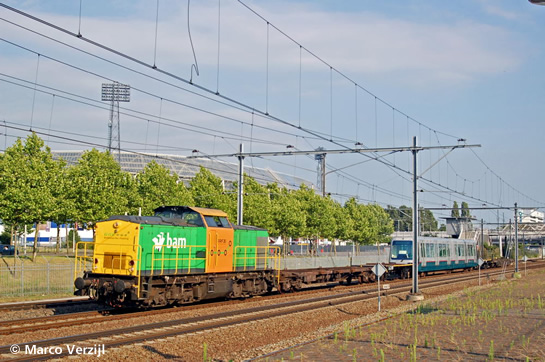
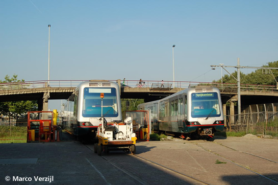
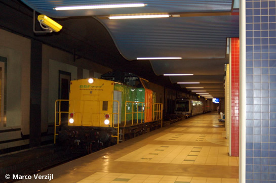
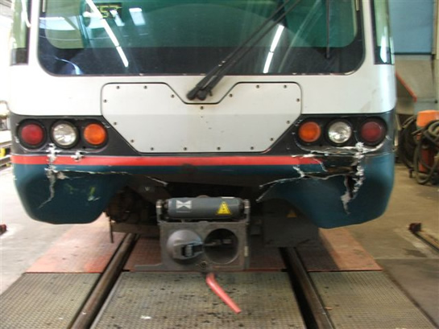
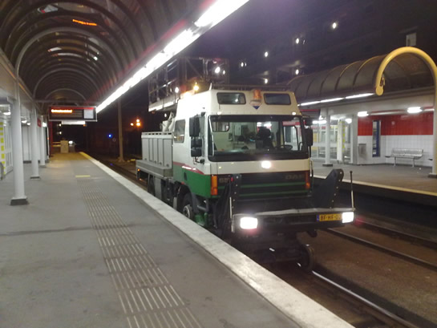
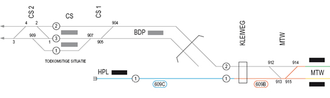
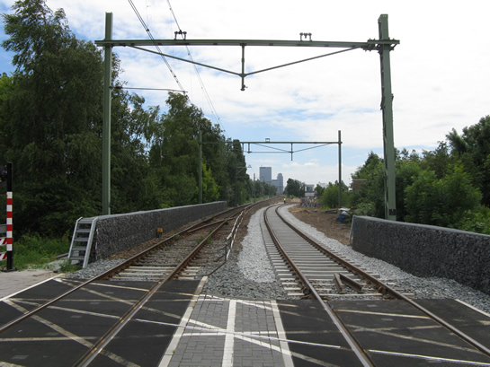
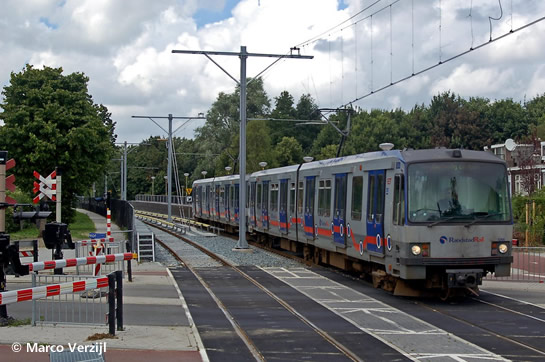
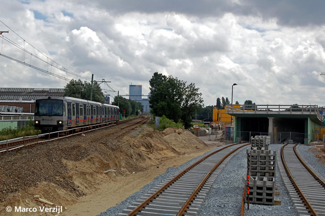

General Electric levert nieuw spoorbeveiligingssysteem en meer
- zondag 30 november 2008 21:38
- Geschreven door Joachim
Op 17 juni werd bekend gemaakt dat GE Transportation, onderdeel van General Electric, het nieuwe spoorbeveiligingssysteem van de Rotterdamse metro gaat leveren. Met de order is 62 miljoen euro gemoeid. De keuze voor GE kwam na een uitgebreide Europese aanbesteding. De vervanging van de spoorbeveiligingsapparatuur is noodzakelijk omdat onderhoud van het huidige systeem steeds lastiger wordt: essentiële onderdelen worden niet altijd meer gemaakt.
Naar nu bekend zullen de complete Erasmus- en Calandlijn geheel voorzien worden van het nieuwe systeem. Eerst zal een gebied rond wisselcomplex Gadering omgebouwd worden, waarna uitgebreid getest zal worden. Vervolgens wordt gefaseerd omgebouwd en getest, alleen in de nachtelijke uren, om het reguliere metroverkeer niet te hinderen. Het omvangrijke project begint in de lente van 2009.
Omdat er geen gevolgen mogen zijn voor het metroverkeer, verandert de aansturing van het spoorbeveiligingsysteem, maar zullen de metrorijtuigen de signalen op dezelfde manier oppakken en verwerken als nu het geval is. Dit betekent dat er aan de rijtuigen geen aanpassingen nodig zijn.
5315
Het volgende rijtuig dat gisteren voor een revisie overgebracht werd naar de Centrale Werkplaats Kleiweg is de 5315. Rijtuig 5331 is inmiddels gereed na een uitgebreide technische revisie. De transporten tussen de Centrale Werkplaats Kleiweg en de lijnwerkplaats Waalhaven worden voortaan uitgevoerd door goederenvervoerder RRF (Rotterdam Rail Feeding). Hiertoe heeft RRF nieuwe koppelwagens laten maken.

Rijtuig 5315 op weg naar de Centrale Werkplaats Kleiweg, ter hoogte van het Feyenoordstadion, met een trekkracht van Rotterdam Rail Feeding.

Rijtuig 5315 is binnengebracht op het terrein van de Centrale Werkplaats, vervolgens zal de gereviseerde 5331 weer meegenomen worden.

Het transport passeert het NS-station Blaak, in opzending rijtuig 5331 dat na een revisie retour naar de lijnwerkplaats Waalhaven gaat.
Erasmuslijn gestremd
In verband met de vervanging van wisselcomplex Leuvehaven is er tussen 28 juli en 8 augustus a.s. geen metroverkeer mogelijk tussen Centraal Station en Wilhelminaplein v.v. Er worden extra trams ingezet en op de Calandlijn rijden meer metro's. Zo rijden er in de periode van de stremming metro's vanuit Nesselande naar De Akkers (Spijkenisse). De eerder genoemde werkzaamheden tussen 9 en 15 augustus gaan niet door.
Vakantiedienstregeling
Vanaf 5 juli tot en met 31 augustus geldt de vakantiedienstregeling. Er rijden daardoor in de spitsen en overdag minder metro's dan gebruikelijk.
Aanrijding Hoofdweg
Op maandag 23 juni kwam wagendienst 558 (5405-5402)in aanrijding met een personenauto op spoor 1 van gelijkvloerse kruising Hoofdweg. Er was sprake van weinig schade aan zowel de personenauto als de betrokken metrorijtuigen. Het metroverkeer werd tussen de stations Prinsenlaan en Graskruid ongeveer twintig minuten stilgelegd.
5417
Rijtuig 5417 raakte in de nacht van vrijdag 20 op zaterdag 21 juni aanzienlijk beschadigd aan de A-zijde, doordat deze op spoor 303 van emplacement 's-Gravenweg tegen een stootjuk aanreed. Naar alle waarschijnlijkheid zal de schade hersteld worden in de Centrale Werkplaats Kleiweg.

Rijtuig 5417 raakte aanzienlijk beschadigd.
Rookmeldinstallatie
Alle 58 rijtuigen van het type T (5202-5228 en 5230-5260) worden voorzien van een rookmeldinstallatie. De rijuigen 5213 en 5232 waren bij wijze van proef reeds voorzien. De aanpassingen worden in de remise 's-Gravenweg gedaan. De rookmeldinstallatie is gekoppeld aan de noodreminstallatie. Na constatering van rook zal de algmene storingsmelder in de bestuurderscabine oplichten, ondersteund door een akoestisch signaal. Aan de buitenzijde van het rijtuig zal een rode lamp gaan branden boven de cabine van de bak waarin rook geconstateerd is.
Extra hangdraden gelijkvloerse kruisingen
De afgelopen weken zijn er extra hangdraden geplaatst in de bovenleiding boven de gelijkvloerse kruisingen van het sneltramtracé tussen de President Rooseveltweg en de Tochtenweg. Eerder werden er al extra hangdraden opgehangen tussen de gelijkvloerse kruisingen 's-Gravenweg en Graskruid. Een hangdraad zorgt dat de rijdraad, die contact maakt met het sleepstuk van de sneltram, aan de draagdraad blijft hangen. De extra hangdraden zijn geplaatst om te voorkomen dat de rijdraaddraad over een grote lengte op straat of op een sneltram valt tijdens een draadbreuk.

Bovenleidingwagen 2036 op station Ambachtsland spoor 1, in een van de nachten waarop extra hangdraden opgehangen werden.
Melanchthonweg / Kleiweg
De metrorijtuigen van de RandstadRail Erasmuslijn maken al geruime tijd gebruik van het in april aangelegde wisselcomplex Melanchthonweg, waarbij ten noorden van de overweg Kleiweg overgelopen wordt naar spoor 1 in zuidelijke rijrichting. Spoor 2 takt inmiddels af naar de toerit van de geboorde tunnel.

Via het nieuwe wisselcomplex Melanchthonweg wordt via wissel 914 overgelopen naar wissel 913 en via spoor 1 naar station Hofplein gereden.

Het nieuwe spoor 2 (rechts), dat aftakt richting de tunneltoerit.

De rijtuigen 5263 en 5266 passeren via "verkeerd" spoor richting station Hofplein.

De nieuwe tunneltoerit en de metrosporen. Rechts passeren de rijtuigen 5269 en 5270 richting Den Haag Centraal.